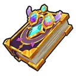

Tomo do Conhecimento Supremo
Feitiço · Tier 11 · Nível 35
Dizem que esse tomo enorme contém o conhecimento de absolutamente tudo que já existiu. [Citation needed]
Atributos
Ataque
990
Defesa
198
Economia
Valor
2.000.000
Tempo de fabricação
14h 10min
XP do comerciante
125.000
Trabalhadores: Feiticeiro 28, Herborista 24, Sacerdotisa 21
Receita


Marcos do projeto
6
Tempo de fabricação -25%
14
Valor +25%
26
-74 Ervas
40
-22 Óleo
60
Chance de qualidade +1